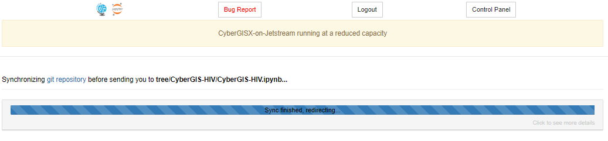
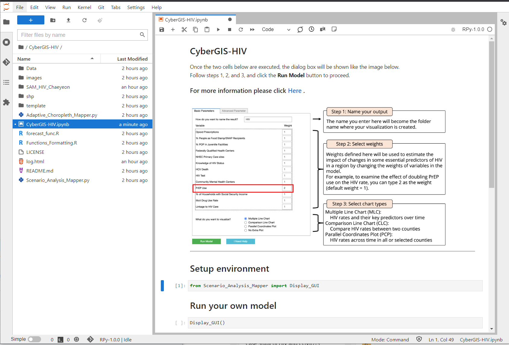
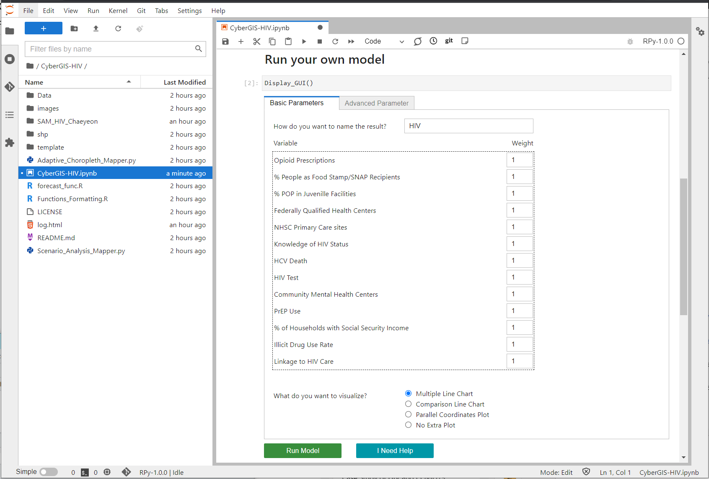

CyberGIS-HIV
Contents
CyberGIS-HIV¶
CyberGIS-HIV is a Web-based GIS application that visualizes and predicts spatiotemporal patterns of HIV rates in US counties. On the graphical user interface, users can run the model on the fly. As an output of the model, spatiotemporal patterns of estimated HIV rates and key HIV predictors are visualized via the interactive coordinated and multiple views. CyberGIS-HIV enables forecasting how future HIV rates change as HIV predictors (e.g., Pre-exposure prophylaxis (or PrEP) use rate or HIV test rate) change.
Video Tutorials¶
Log into CyberGISX
Run CyberGIS-HIV
Explore the spatial patterns.
Explore the temporal patterns.
Getting Started¶
If you do not have a CyerGISX account, create a CyberGISX account. https://cybergisxhub.cigi.illinois.edu
After you log in, go to the ‘Discovery’ tab and find the ‘CyberGIS-HIV’ project.
Click on the ‘Open with CyberGISX’ button. The CyberGIS-Jupyter page would automatically start running.
When the page is fully loaded, click on the first code block and run it by clicking on the ‘Run’ button or using the CTRL+ENTER key.
After the first code block is completed, run the second code block.
Data¶
Click to see the description of data. They are inputs of the model.
Contributors¶
Su Yeon Han 1, Chaeyeon Han1, Chang Liu1, Jinwoo Park1, Nattapon Jaroenchai1, Zhiyu Li1, Shaowen Wang1, Bita Fayaz Farkhad2, Man-pui Sally Chan2, Danielle Sass3, Bo Li4, Dolores Albarracin2
CyberGIS Center for Advanced Digital and Spatial Studies, University of Illinois at Urbana-Champaign, Urbana, Illinois
University of Pennsylvania
Northwestern University
University of Illinois at Urbana-Champaign, Urbana, Illinois
Funding¶
This project is supported by NIH project# 1R01AI147487-01: Development and Validation of Regional Models of HIV Vulnerabilities and Solutions